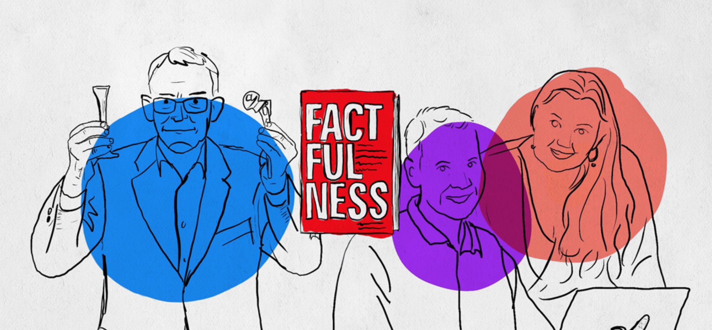

Bill Gates @BillGates
It’s hard to pick up on progress if you divide the world into developed countries and developing countries. In his newly-released book, Hans Rosling offers a better framework. You can download a free excerpt here…
